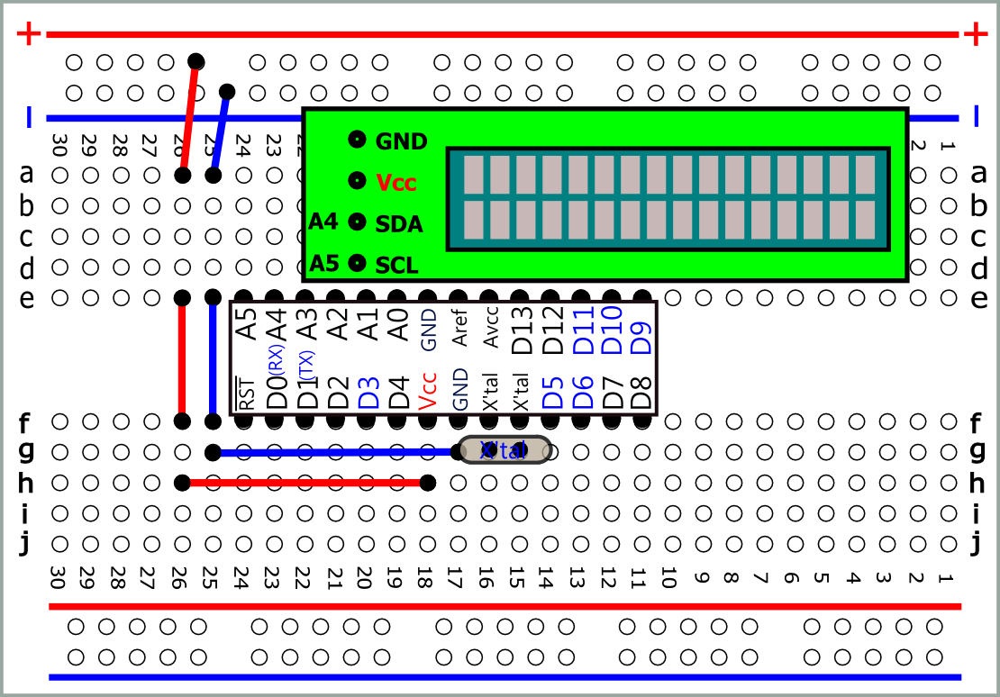
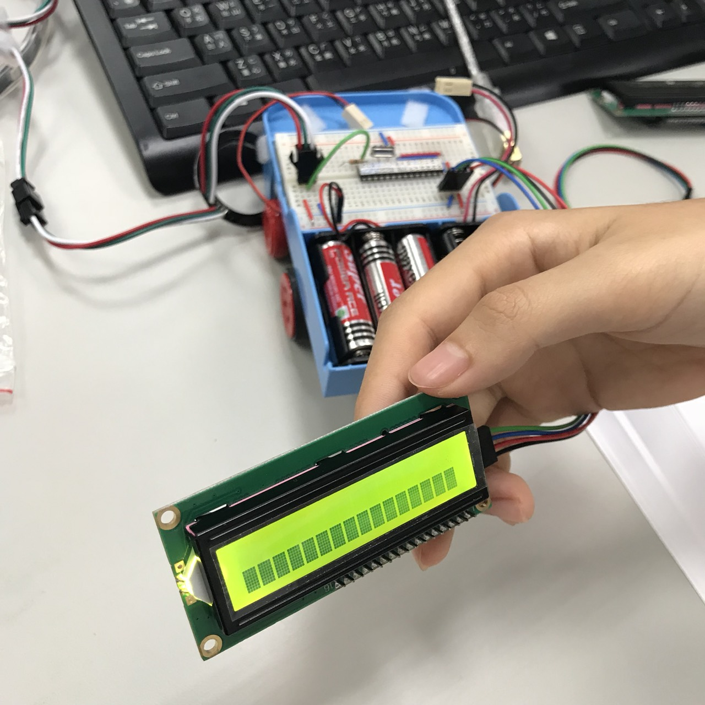
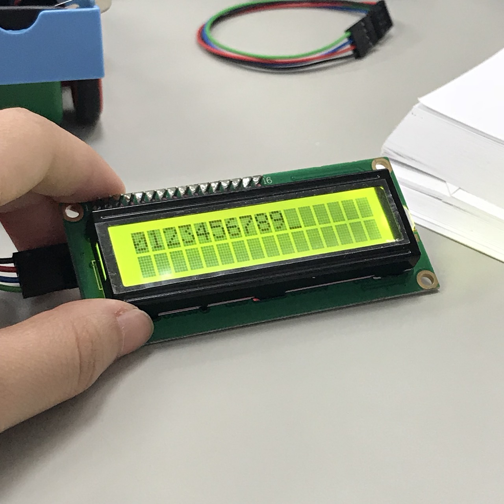

SDA-->A4
SCL-->A5

//先以此程式確定 Address
//Address Scanner
#include
void setup()
{
Wire.begin();
Serial.begin(9600);
while (!Serial); // Leonardo: wait for serial monitor
Serial.println("\nI2C Scanner");
}
void loop()
{
byte error, address;
int nDevices;
Serial.println("Scanning...");
nDevices = 0;
for(address = 1; address < 127; address++ )
{
// The i2c_scanner uses the return value of
// the Write.endTransmisstion to see if
// a device did acknowledge to the address.
Wire.beginTransmission(address);
error = Wire.endTransmission();
if (error == 0)
{
Serial.print("I2C device found at address 0x");
if (address<16)
Serial.print("0");
Serial.print(address,HEX);
Serial.println(" !");
nDevices++;
}
else if (error==4)
{
Serial.print("Unknow error at address 0x");
if (address<16)
Serial.print("0");
Serial.println(address,HEX);
}
}
if (nDevices == 0)
Serial.println("No I2C devices found\n");
else
Serial.println("done\n");
delay(5000); // wait 5 seconds for next scan
}
確定LCD是0x27
其他指令：
LiquidCrystal Library
- lcd.backlight(); //背光
- lcd.cursor();
//顯示游標
- lcd.noCursor();
//不顯示游標
- lcd.setCursor(0,0);
//設定第一個字顯示座標
- lcd.blink(); //游標位置閃爍
- lcd.noBlink(); //游標位置不閃爍 (預設)
- lcd.display(); //顯示
- lcd.noDisplay(); //不顯示
- lcd.print("0123456789"); //從左上角開始顯示0123456789
- lcd.clear(); //清除
- scrollDisplayLeft() //畫面向左
- scrollDisplayRight() //向右捲動
- autoscroll() //自動捲動
- leftToRight()∕rightToLeft() //設定捲動方向


#include
#include
LiquidCrystal_I2C lcd(0x27,16,2);
void setup()
{
lcd.init(); //初始化
lcd.backlight(); //開啟背光
lcd.blink();
if()
{
lcd.print("we wish a Merry Christmas");
}
else if()
{
lcd.print("Silent night");
}
else if()
{
lcd.print("Santa Claus Is Coming To Town");
}
}
void loop()
{
lcd.scrollDisplayLeft(); //記憶體往左移1位
lcd.display(); //顯示
delay(1000);
lcd.noDisplay(); //不顯示
delay(1000);
}